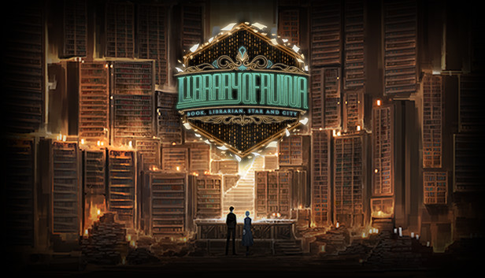

Welcome, Dear Guest
About Library of Ruina
Library of Ruina, also known as LoR, is a turn-based RPG and deck-building game where you take on the role of the Library's director who seeks to expand their library with all the knowledge in the City. The game was developed by the studio Project Moon, and was fully released onto PC and Xbox One on August 10, 2021. The game follows the events of Project Moon's previous title, "Lobotomy Corporation", and is followed up by their newest title, "Limbus Company". The game has recieved very positive reviews on Steam. LoR is a very story-rich game, and can keep players invested in a playthrough for over 100+ hours. The Steam version of Library of Ruina allows players to download mods from the Steam workshop to enhance their experience, though doing so disables achievments.
Lore
Following the events of Lobotomy Corporation, the Pianist destroyed all of L-Corp and killed thousands of people. In the wake of the disaster, a strange veil of mist formed, housing the mysterious building known as the Library. The director of the Library, Angela, seeks to create a perfect book in hopes that it will allow her to finally be free from what she was created to do before the fall of L-Corp. However, an unexpected guest was able to enter the Library without an invitation. Roland had somehow managed to breach the walls of the Library, an act that supposedly confused even himself. Reluctantly accepting the title of Angela's servant, Roland agreed to help Angela with her goal in order to get his own freedom. Together, along with the patron librarians, they fight to uncover the knowledge of the city, and to fulfill their own personal motives...
Helpful Links
Below are some links that can provide additional information regarding the library. May you find your book in these places, dear guest
Fun Facts
Below are some fun facts.
Project Moon's offical resturant, HamHamPangPang, has had collaborations involving food and drinks themed around different characters in the game
Library of Ruina has sold almost 1 million copies on Steam alone
Project Moon has had music composed for LoR by the band Mili, known for working on titles like the Goblin Slayer anime
Before the full release, LoR was put out in parts, with more story and content getting added over time